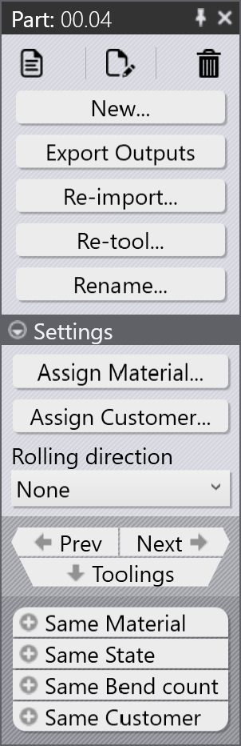
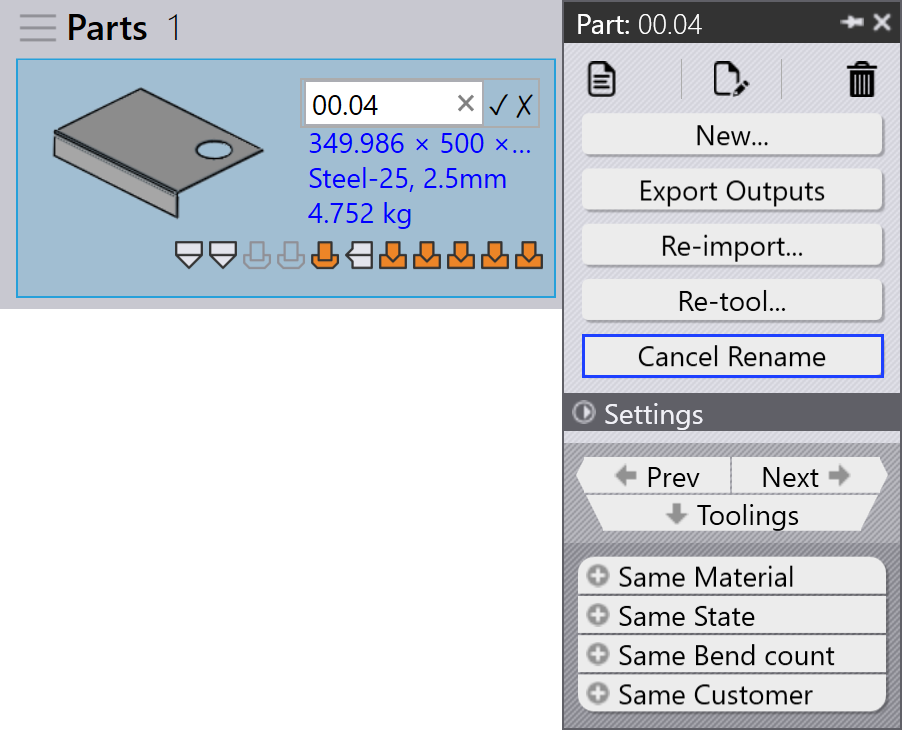
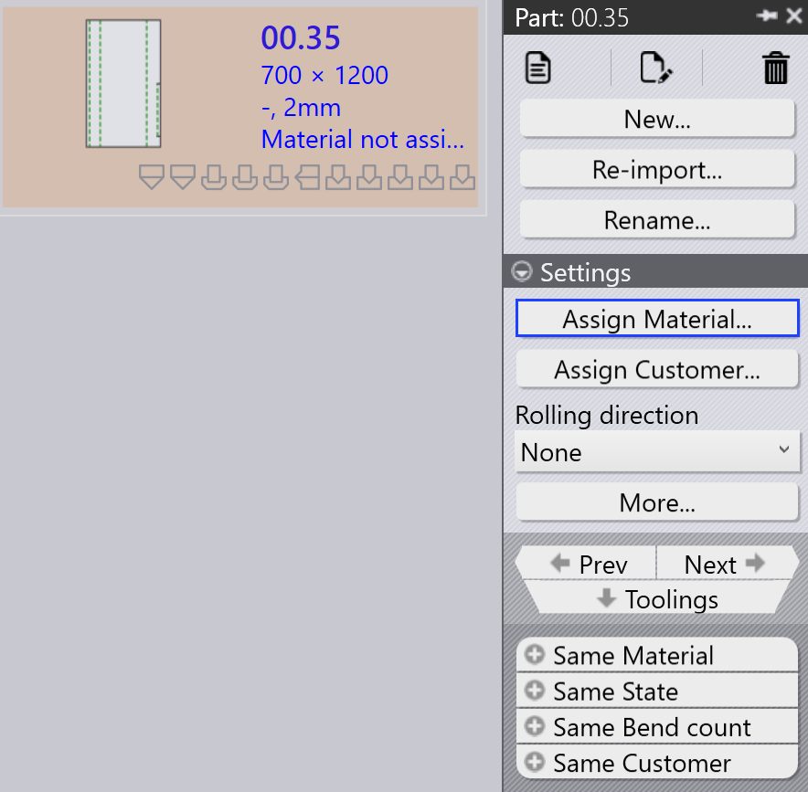
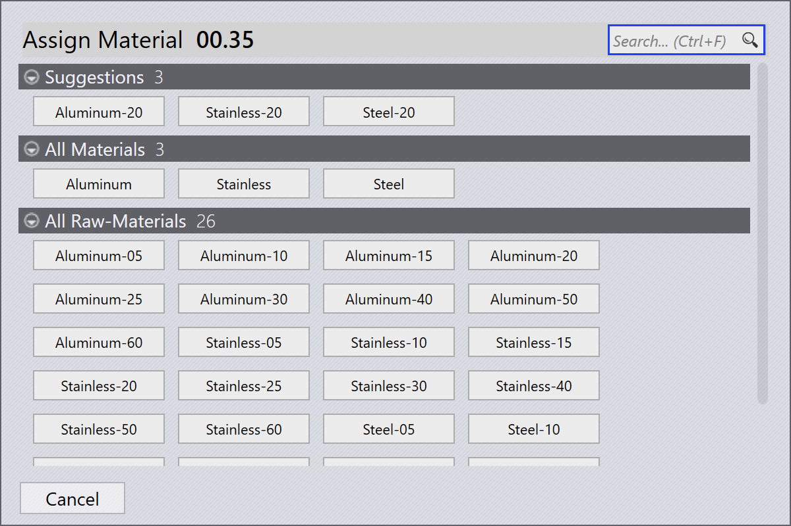

Part panel
이 섹션에서는 부품 인스턴스를 관리하는 데 사용되는 재가져오기…, 다시 툴…, 이름 바꾸기…, 출력물 내보내기 등과 같은 부품 관련 작업을 설명합니다.
 |
|


재가져오기…
-
부품을 마우스 오른쪽 버튼으로 클릭하고 재가져오기… 를 클릭합니다.

-
모든 기계에서 선택한 부품 툴링 인스턴스가 지워지며 자동 툴링 및 수동 툴링 인스턴스가 포함됩니다.
-
기존 출력 파일(CAD, Bend 및 Cut)이 제거됩니다.
-
부품을 다시 가져오고 모든 기계에 대해 새로운 CAD 검증 및 툴링이 적용됩니다.
-
업데이트된 툴링 결과를 기반으로 새 출력 파일이 생성됩니다.
다시 툴…
-
부품을 마우스 오른쪽 버튼으로 클릭하고 다시 툴… 를 클릭합니다.

-
모든 기계는 기본적으로 선택되어 있으며 Laser, Punch, Panel 및 Press brake로 그룹화됩니다.
-
OK 를 클릭하여 계속합니다. 이렇게 하면 선택한 기계에 대한 자동 툴링 및 수동 툴링 인스턴스가 모두 제거되고 관련 출력 파일이 삭제됩니다.
-
기존 출력물 유지 확인란을 선택하면 이전에 출력이 제거된 부품만 다시 툴링되고 다른 출력은 그대로 유지됩니다. 선택하지 않으면 선택한 기계에 대한 모든 출력 파일이 제거되고 다시 툴링하는 동안 다시 생성됩니다.
|
이름 바꾸기…
이 섹션에서는 TruSmartCAM에서 하나 또는 여러 부품의 이름을 바꾸는 방법을 설명합니다.
-
부품을 마우스 오른쪽 버튼으로 클릭하고 이름 바꾸기… 를 클릭합니다.

-
현재 부품 이름을 표시하는 이름 바꾸기 확인 대화 상자가 나타납니다.
-
새 이름을 입력하고 체크 ✓ 아이콘을 클릭하여 확인하거나 십자 ✗ 아이콘을 클릭하여 이름 바꾸기 작업을 취소합니다.

-
여러 부품의 이름을 바꾸려면 필요한 모든 부품을 선택한 다음 그중 하나를 마우스 오른쪽 버튼으로 클릭하고 이름 바꾸기… 를 클릭합니다.
-
선택한 부품의 총 수가 포함된 확인 대화 상자가 나타납니다.
-
각 부품에 대해 새 이름을 입력하고 체크 ✓ 아이콘을 클릭하여 하나씩 확인합니다.
-
부품이 실수로 선택된 경우 십자 ✗ 아이콘을 클릭하여 취소합니다. 또는 부품을 마우스 오른쪽 버튼으로 클릭하고 이름 바꾸기 취소 를 클릭하여 이름 바꾸기를 건너뛸 수 있습니다.
출력물 내보내기
이 옵션은 부품 출력을 공장 설정 에 구성된 대상으로 내보냅니다. ( Bend Settings 및 Cut Settings 참조)
출력 위치는 각각의 출력 설정에서 Bend, Fold 및 Cut에 대해 별도로 정의됩니다. 전체 부품에 대해 bend, fold 및 cut 작업과 연결된 모든 툴링이 내보내집니다.

아래 그림과 같이 내보낸 파일은 지정된 폴더에 저장됩니다
(예: C:\PraxData\Out\Reports).

| 내보낸 파일은 작업 유형에 따라 다릅니다. Bend 및 Fold 작업의 경우 NC 파일 및 보고서가 생성됩니다. Cut 및 Punch 작업의 경우 부품 파일만 내보냅니다. |
Part assign material
재료가 할당되지 않음 상태의 부품은 추가 처리 전에 업데이트해야 합니다. 아래 단계에서는 재료를 할당하는 방법을 설명합니다.
-
재료가 할당되지 않음 상태를 표시하는 부품을 마우스 오른쪽 버튼으로 클릭하고 재료 할당 를 선택합니다.

-
재료 할당 창이 열립니다.

-
대화 상자에는 네 가지 섹션이 있습니다:
-
추천 - 가져온 부품의 두께를 기반으로 원자재를 자동으로 제안합니다.
-
모든 재료 - TruSmartCAM에 정의된 모든 재료 유형을 나열합니다.
-
모든 미가공 재료 - 시스템에서 사용 가능한 모든 원자재를 표시합니다.
-
사용된 미가공 재료들 - 빠른 액세스를 위해 가장 최근에 사용한 원자재를 표시합니다.
-
-
상단의 검색… (Ctrl+F) 필드를 사용하여 재료를 빠르게 찾을 수 있습니다. 예를 들어 "steel"을 입력하면 세 섹션 전체에서 일치하는 모든 재료가 표시됩니다.
-
필터링된 목록에서 Raw-Material 목록에서 필요한 재료(예: Steel-25)를 선택합니다.
-
선택한 재료가 부품에 할당됩니다.
롤링 방향
롤링 방향 은 부품의 그레인 방향을 나타내며 부품이 절단되고 처리되는 방식에 영향을 줄 수 있습니다. 이 옵션을 사용하면 Part Library의 부품에 대한 롤링 방향 을 지정할 수 있습니다. 선택한 방향에 따라 부품이 사용 가능한 기계에서 절단을 위한 올바른 방향으로 배치됩니다.
-
Part Library 또는 Job 창에서 부품 타일을 마우스 오른쪽 버튼으로 클릭합니다.
-
선호하는 롤링 방향을 선택합니다:
-
없음
-
수평
-
수직

-
-
선택한 롤링 방향에 따라 사용 가능한 모든 절단 기계에 대해 부품이 자동으로 다시 툴링됩니다.
-
부품 타일은 아래와 같이 선택한 롤링 방향을 표시합니다: